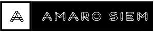

The goal is actually to get to the end of the race track the fastest with your car and that is 400 meters The Dragrace Three. the purpose of the drag race tree is the way the racers know when to leave you first have two staging lights and after that it counts down to two oranges and then green then you can leave Drag racing is the fastest, loudest and perhaps most spectacular of motorsports, pitting drivers and their cars against one another in pairs from a standing start. The standard course is a straight quarter-mile – sometimes shorter, never longer – and the racing format is instant-knockout. "Bron" link.